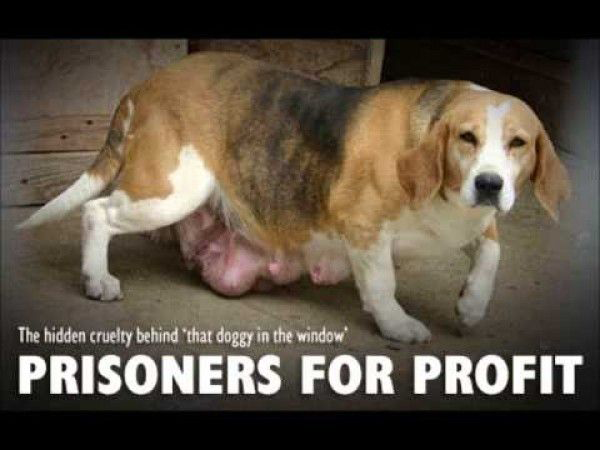

Puppy mills are inhumane commercial puppy-breeding facilities that value profits over the health or well-being of the dogs used as breeding stock. They sell their "product" to pet stores, on-line, in classified ads and at dog auctions.
Commercial puppy-breeding is a multi-billion dollar industry. And it's an ugly one. People we talk to are always surprised to learn that it exists and that it is legal. But the fact is, dogs are considered "livestock" in the eyes of our federal government (Animal Welfare Act), and are regulated by the Department of Agriculture (USDA). The law allows a level of care that most people would not consider humane.
Commercial puppy-breeders take advantage of this to maximize their profit at the expense of the welfare of the dogs, inhumanely confined and bred continuously until their feeble bodies give out. They hide the truth from the public by selling their puppies to unsuspecting consumers through pet stores, websites and classified ads, refusing to reveal where or how the puppy was born and raised.
Getting ready to adopt a new puppy? Adopt-a-Pet.com’s “The Puppy Manual” is not a complete guide to raising a puppy – there are entire books devoted to that topic! However it is a super-helpful and concise 21 pages covering the basics, to help you prepare for the arrival and first few months with your new puppy. The basic training, socialization, and guidelines explained simply with many easy-to-follow steps can be used starting at the age of 8 weeks, the earliest age at which most people would be bringing a puppy into their home...
Read MoreThanks to you, we have adopted a wonderful Shepherd from the Lancaster County SPCA. Cody rescued us the very day he appeared in our email. We hurried to Lancaster aspca and got him the same day. We wanted a dog that needed us as much as we needed him, and he is the perfect fit. Thank you, thank you, for all your great work...
Read More